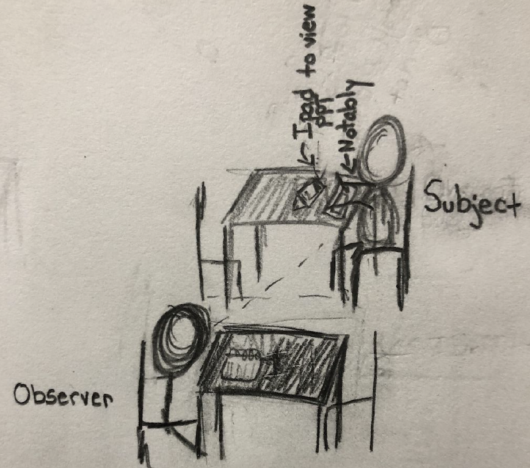
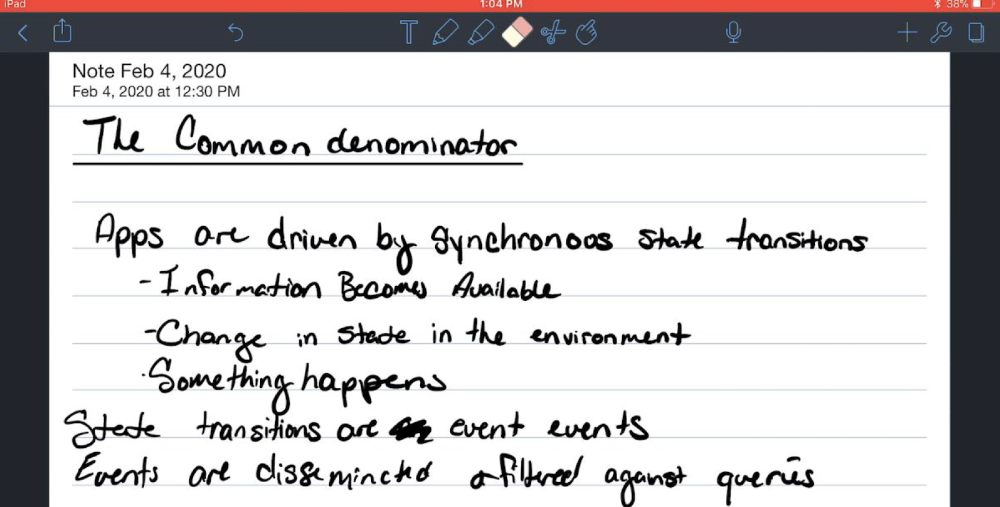
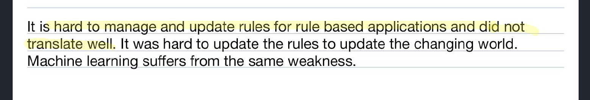
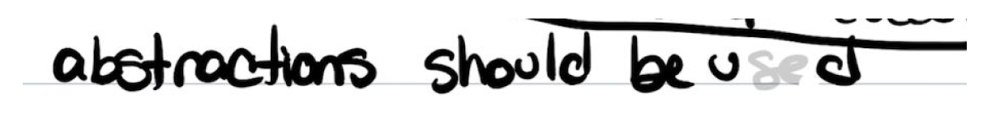
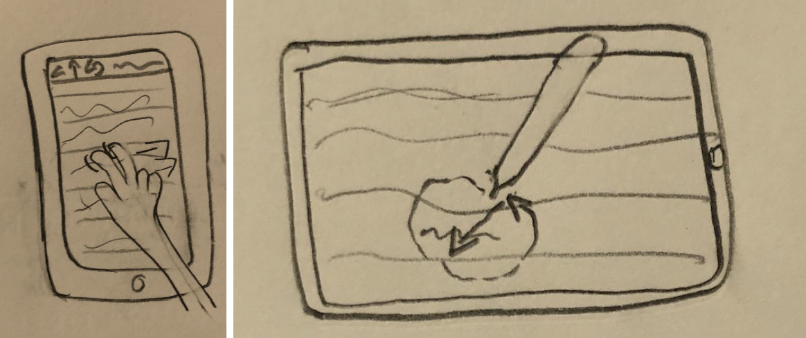
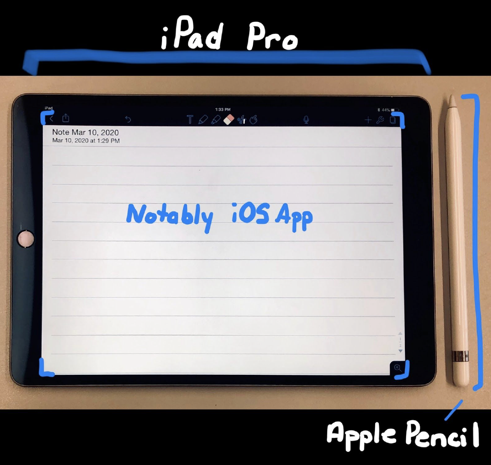

Notably App Concept
UI/UX
Notably is a an application that allows users to take handwritten notes using an iPad and Apple Pencil.
I observed users using the popular Notably application as they used an iPad 12.9 and a first generation Apple Pencil. I observed them as they both wrote, drew, and typed their notes.
Problems: Users can not write or change tools using their fingersl they can only use their fingers when interacting with the onscreen keyboard of if they are scrolling through their notes
The iPad, Apple Pencil, and Notably app work together and operate as a substitute for paper, pencil, pen, and highlighter user.
Prototype Link
| ROLE | YEAR | PROJECT TYPE | TECH |
| UI/UX Designer Researcher |
2020 | School | Illustrator Figma |
Business Professionals - Business Professionals can use this application to record and organize work-related information. More specifically, they can take notes in meetings, while on phone calls or emails, create to-do lists, bullet talking point reminders, draft emails, or similar tasks. The Notably app offers benefits including that it is an environmentally friendly alternative to using paper and plastic pens, notes are easy to share with other devices and individuals, and it would be less likely that notes will be destroyed or lost.
Students - Students will use this app to take notes, capture audio recordings of lectures, organize their notes, and create to-do lists. This app will help students take, share, organize, and store their notes. Notably will also allow students to draw and add color to diagrams presented during lectures.
Lecturers/Educators - Lecturers will use this app to take notes for their classes or discussions and to help them create lists. This app can help educators record grades to allow them to record notes to self-critique. Finally, this app can also help them create to-do lists.
Home User (Taking Notes for Personal/General Life Use) - Home Users will use the app to accomplish everyday tasks, generally using paper and PostIts, including writing and sharing grocery lists, to-do lists, drafting emails, and similar tasks.
Writers - Writers will use this app to write their pieces and to create diagrams outlining their plot progressions, character archetypes, to-do lists, audio record, or write out brainstormed ideas. Writers can also use this app to send drafts to their computer to type them after handwriting them.
Digital Artists (Outside of Intended Usage) - Although this is not an intended use of note-taking applications, many artists can use notably to sketch drawings. Notably serves as an alternative to sketch pads and pencils and pens, and can allow artists to share their sketches seamlessly without needing to scan them, or use a Wacom tablet.
Audio Artist (Outside of Intended Usage) - Musicians can use the apps audio record features and write lyrics, sing, or record musical notation.
The Stakeholder chosen was a student using the application to digitally write notes from a PowerPoint in a relatively noisy coffee shop and a quiet and private room in a library. Each interaction lasted 10 minutes, and we conducted two observations on the same day.
The subject used his iPad to review a PowerPoint, and the subject used my iPad, Apple Pencil, and Notably app to write notes, and my iPad used a screen recorder to capture every action taken for review. I sat at the table next to my subject and noted some of his actions. I noted facial expressions, and various gesture attempts to gain information about their experience. I did not want to look over my subject’s shoulder as he worked, because I wanted to record genuine and natural interactions with the device and application. I wanted to give some distance in both interactions. In general, the subjects’s facial expressions did not change as the interface is straightforward to navigate and use, he squinted an occasionally, but this was more to help him concentrate on how to paraphrase the notes than as a reflection of the app’s difficulty.
Observation 1 took place in a coffee shop.

Observation 2 took place in a private room in a library.
The subject stopped using the erase function as it was time consuming to switch from ink to eraser and back.
The subject experiened some difficulty when switching from the keyboard to the highlighter.
When attempting to erase letters, multiple letters were deleted at once if creates from a single stroke. The user is only to erase strokes not
Subject attempted gestures with the touch and pen that are unsupported. All of the attempted gestures were supported for other not taking devices including shortcutes for SmartBoards.
I observed a single subject twice once in a busy and relatively noisy coffeehouse, and a second time in a tranquil private library study space with soft classical music playing. Both interactions lasted 10 minutes, and in Observation 1, the subject had his first experience using an iPad and Apple pencil to write notes. At the coffee shop, the subject was seated at a small table in a wooden chair, and I sat facing him at the table to his left. I wanted to see his expressions and gestures so that I could review his physical actions and expressions later in the screen recorded video.
He had a PowerPoint from one of his courses and took notes on a lesson. He used his iPad to review the PowerPoint presentation. The second observation took place in a private library study room; it was just the subject and me. We used the same technologies, and we had soft classical music playing to make the interaction less uncomfortable. I believed that complete silence would bring more self-awareness to the fact that he was being studied, and the addition of music would result in less obstructed data. I sat at the other end of the table about 3 ft away. Observation 1 took place around 12:50, and Observation 2 took place the same day at 5:30 pm.
1A) The subject stopped attempting to erase errors after the first attempt. He tried to erase using the end of the Apple Pencil, which did not work, and the Eraser button is laborious to access and to reassess the pen tool afterwards. The subject opted to scratch out errors instead later stating that he would have erased them all at the same time at the end, but did not want to distract himself from taking notes by needing to access the eraser.
1B) The subject tried to swipe left and right to navigate pages, this functionality is not available. He did this when trying to review notes, the screen orientation was vertical, as if using an e-reader.
1C) The subject decided to turn the iPad horizontally to write notes more naturally. Uniquely making the interaction more intuitive and similar to writing on paper or on a dry erase board.
2A) The subject attempted to use a SmartBoard eraser shortcut to erase information ie big circle and swiping through. This gesture did not produce any results
2B) The subject implements a cursive-esque printing style where he combines various letters in a single stroke. His ligature style of writing made it difficult to erase efficiently because it would erase chunks of words at a time, as opposed to a single letter. Davina Wooley
2C) The subject attempted to use the onscreen keyboard. The keyboard works with finger interaction and Apple Pencil interaction. Two hands were more efficient for typing. After typing with both hands, he wanted to highlight some of the text using his finger, but the functionality was unavailable. He had to pick up the Apple Pencil again to highlight a single word before reaccessing the keyboard to continue typing.
1. Page Flipping Option with Animated Transition/ Horizontal Scroll while Reviewing.
2. Easier access to erase option/ possible pen stroke recognition or a larger button. Should be accessible by touch to decrease time requirement, as opposed to only pen interactions.
3. Add functionality so that the subject does not have to lift the pen from the screen as often. The entire stroke should not be erased.
4. Easier way to move from integrating touch input, digital keyboard input and Apple Pen input. You have to take distinct steps to navigate between input types.
iOS Notably App, Ipad Pro 2nd Generation & Apple Pencil 1st Generation
 1. Organizing Notes by Placing documents in Folder
2. Review
3. Edit
4. Create new notes
5. Send Notes - Email, Dropbox, Save to Google Drive, OneDrive, Box, iTunes, Print, or WebDAV.
6. Undo Button - This button undoes the last completed action, and the undo action can be pressed repeatedly by pressing the button. This Icon will be able to undo every action performed in this document. When the undo button greyed out,
it means that the user has undone all possible actions.
7. Text Tool - This tool allows the user to click anywhere on the screen to add their text; they can then use the built-in on-screen keyboard or an external compatible keyboard. Users can adjust font sizes, typefaces, font sizes, and make
the text bold, italicized, or underline text. Users can also add bullet points from the text tool. Users can type using fingers or Apple Pencil.
8. Pencil Tool 8. Highlighter
9. Eraser
10. Scissor Tool - Select on-screen elements and move them to another location using the Apple Pencil Exclusively
11. Hand Tool - Allows users to Scroll through notes
12. Insert Media Photo ( '+' Icon )
13. Insert Media Take A Photo ( '+' Icon )
14. Insert Media Figure ('+' Icon) - This tool allows users to Add common Shapes, Lines, and hand-drawn figures to create diagrams.
15. Insert Media Add a Web Clip ('+' Icon)
16. Insert Media Add a Sticky Note ('+' Icon)
17. Utilities Paper Properties
18. Scroll Bar
19. Magnify
1. Tracing Pad iPad Application (Adapted Features)- Tracing Paper and light board combination. The user can take a photo and draw or sketch on top of it for reference, and when done, they can remove the visibility of the initial image. The user will be
able to adjust the visibility of the reference image manually throughout the design process.
2. Speech-to-Note Auto Generator (Adapt)(Prototype 1)- Users can record a speech, and the system will analyze the audio input and take notes for the user. The text will appear faster than the user would have been able to write or type
them, and the user can highlight, and add media, as they desire. This will allow the user to pay more attention to the lecture, and worry less about catching every word. The user can record the lecture directly from an Apple Watch and edit
it from an iPad, or they can record the audio from the iPad itself. A single Notably Account will link Apple watch and iPad applications, and they will all share notes and recordings automatically from the time the user begins using adding
content. The iPad does not need to be within close proximity for the system to work. The original design for the Notable App will remain, just the Apple Watch microphone or the iPad microphone may be populating the content area. Recording
and Note Taking can begin using Siri voice controls, and all information saves to the Notably cloud.
3. Digital Whiteboard iPad Application (Adapt/Minimize)(Prototype 2)- This is an app with all the same features of a traditional whiteboard. The user can write using different colored markers, and they can erase the content using an eraser
or the side of their hand. The user can swipe up or down the whiteboard to reveal another clean whiteboard or review a previous whiteboard. The last whiteboard will still be saved automatically, and the user can create as many or as few whiteboards
as they desire. Users may also send the board as a PDF.
4. Noteboard and PowerPoint and audio combined iPad Application (Combine)- The user can upload a PowerPoint. The slides are converted to PDF’s then the user can write directly on them. They can record lectures and time them to the slides
to review almost like a film upon review. The notes can be printed as well.
5. Note Adviser iPad App (Adapt)- App will analyze a user's notes- and help the user study. This app can turn the content into notecards, practice tests, and study guides. This app can provide helpful metrics regarding whether or not
the user comprehends a particular topic, and offer study and content retention tips.